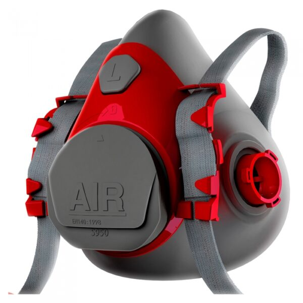
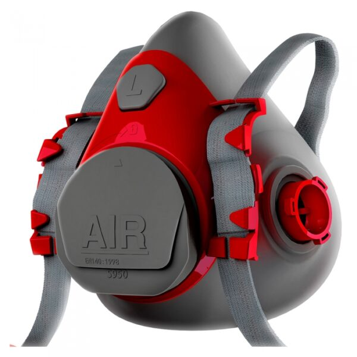

El respirador de aire tipo Media Cara de la Serie S950 está disponible en tamaños mediano (S950M) y grande (S950L). Su diseño incluye una máscara de silicona de alta calidad, con un borde de sello mejorado y tirantes ajustables más anchos para un ajuste seguro y cómodo. Equipado con conectores de cartucho tipo bayoneta y una válvula de exhalación con escape vertical, ofrece una protección eficaz contra la inhalación de partículas sólidas y gases. Las bandas están fabricadas en polietileno de alta resistencia, y el respirador está disponible en un atractivo color gris y rojo, asegurando tanto funcionalidad como estilo.
 
